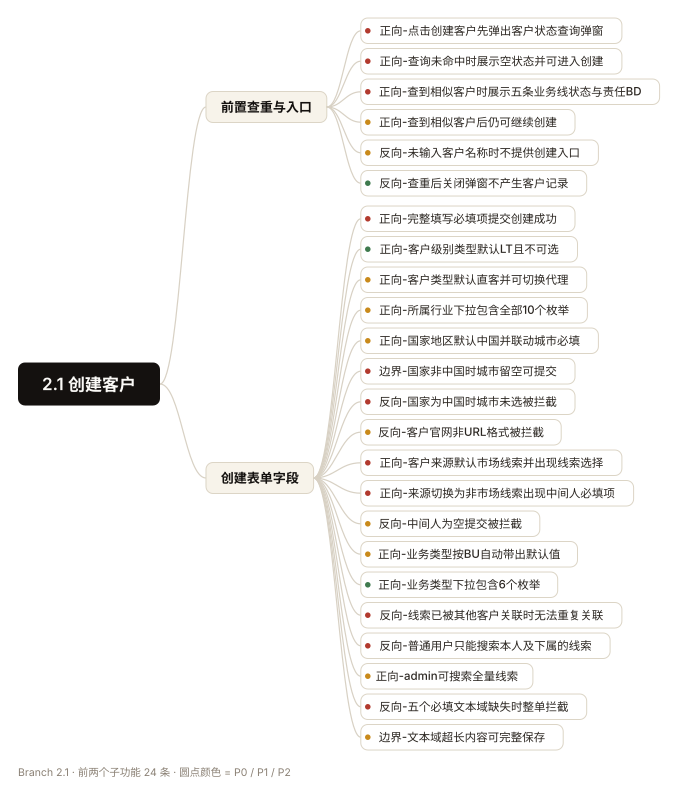

需求写得再细，用例仍然靠人拆。 拆完还不算完：层级靠拍、优先级靠嘴、交付靠手动导入。
一份 46 页的 PRD，字段表、状态机、异常分支、第 4 章的性能指标散落在不同章节。人扫一遍能记住七成，剩下的三成会在上线后变成工单。
拆不全
字段表 30 个字段、4 个状态机、13 条异常分支。逐条对撞一遍要半天，漏掉的往往是「审批中客户被合并」这类中间态。
层级靠拍
模块、子功能、用例挤在同一层，脑图打开像一团毛线；想再往下加一层，整棵树就深到看不见。
交付断层
写完还是 Markdown，还要手动导入 XMind；优先级口头约定，评审时 P0 能占到七成——等于没有优先级。
六步，每一步都有可核对的东西。 不是「调一次模型吐一份结果」，而是能复现、能卡住、能回滚的工序。
Readread_prd.py
PDF 用 PyMuPDF 抽文本，DOCX 走标准库，MD/TXT 直读。超过 30 页先出章节骨架，避免一上来逐页硬读。
$ python scripts/read_prd.py prd.pdf --outline
1. 需求背景
2. 产品设计
2.1 创建客户 2.2 客户合作状态查询
2.3 客户编辑 2.4 客户跟进
2.6 客户合并/存档
4. 非功能性需求
Split一章一模块
按章节切 L1，命名与文档用语一致，方便回溯。同时抽出全部业务规则编号、状态机与枚举、字段表，以及第 4 章的非功能指标——这一章最容易被整章漏掉。
# 抽出来的对账清单
BR-001 … BR-011 创建客户
BR-201 … BR-205 合作状态查询
BR-301 … BR-305 客户编辑
BR-401 … BR-406 客户跟进
BR-601 … BR-610 客户合并
状态机 2 个 · 字段表 6 张
Route按文档内容选规范
路由看文档里有什么，不看用户有没有提。出现 SLA / RT / 导出上限，就必须加载性能规范；出现接口路径与错误码，追加接口规范。
# 命中条件
"≤ 2s" "≤ 30s" "10000 条" → 性能规范
"/api/" "错误码" "500" → 接口规范
默认 → 通用设计规范
Draft六策略逐条过
正向、反向、边界、等价类、场景、状态迁移，每个子功能都要过一遍，不许只写正常流程。每条用例逐条判 P0/P1/P2，禁止整批默认 P1。
正向 95 · 反向 51 · 状态 39 场景 20 · 边界 14 P0 70 (32%) · P1 125 · P2 24
Gatevalidate_outline.py
层级、标题空格、条目挂载位置、有序列表、缺步骤、缺预期、缺优先级、BR 覆盖率，八项一起卡。不过闸门就不产出文件，避免把半成品交出去。
$ validate_outline.py out.md --expect-br 001-011,601-610 业务规则覆盖 37/37 ✅ ✅ 格式校验通过，可直接生成 .xmind
Emitbuild_all.py
一条命令出三个文件：原生 .xmind（双击打开）、.opml（XMind 8 兜底）、.md（版本管理）。优先级自动转成 XMind 的红黄绿图标。
$ python scripts/build_all.py out.md ✅ out.xmind 864 节点 / 219 用例 ✅ out.opml XMind 8 导入用 ✅ out.md 源码
一份 46 页的 PRD，从头跑到尾。 下面是真实输入、真实校验输出、真实产物。客户名与系统名已脱敏，业务规则原文未改。
2.1.4 创建客户表单
| 字段 | 控件 | 必填 | 说明 |
|---|---|---|---|
| 客户名称 | Input | 是 | 全局唯一，精确匹配 |
| 客户级别类型 | 只读文本 | — | 默认 LT，用户不可选 |
| 客户类型 | Radio | 是 | 直客 / 代理，默认直客 |
| 所属行业 | Select | 是 | 10 个枚举 |
| 城市 | Select | 是 | 国家非中国时取消必选 |
| 客户来源 | Radio | 否 | 非市场线索时出现「中间人」必填 |
| 业务类型 | Select | 是 | 按 BU 带默认值 |
| 推广计划 | Textarea | 是 | 无长度限制 |
2.1.6 业务规则（节选）
BR-001客户名称全局唯一，精确匹配，除删除外全部客户
BR-002点「创建客户」先弹查重弹窗，不查询无法进入创建
BR-004客户编号自动生成 KH-{YYYYMM}{6位序号}
BR-010并发创建同名客户，后提交提示「客户已存在」
2.6.1 下游实体处理（节选）
| 实体 | 合并后处理 |
|---|---|
| 客户 | 旧客户改已存档并记录去向，旧信息不覆盖新客户 |
| 报价单 | 归属改为新客户，已删除的不改 |
| 广告主 | 按投放平台广告主 ID 判重，仅迁移关联 |
| 授信额度 | 不直接相加，取较高者保留 |
4.1.1 响应时间
客户列表查询 ≤ 2s（单页 50 条）· 客户合并 ≤ 3s · 跟进申请提交 ≤ 1s
$ python scripts/build_all.py out.md \ --expect-br 001-011,201-205,301-305,401-406,601-610 ① 校验大纲… 根主题 1 / 模块 11 / 子功能 55 / 用例 219 条目 578 条，明细 {'前置': 118, '步骤': 219, '预期': 219, '备注': 22} 类型分布 {'正向': 95, '反向': 51, '边界': 14, '状态': 39, '场景': 20} 优先级 {'P0': 70, 'P1': 125, 'P2': 24, '未标': 0}（P0 占比 32.0%） 2.1 创建客户 5 41 15 2.2 客户合作状态查询 4 20 5 2.3 客户编辑 3 22 8 2.4 客户跟进 4 30 9 2.6 客户合并 5 36 15 端到端业务场景 4 9 4 非功能性需求 3 13 2 业务规则覆盖 37/37 ✅ ✅ 格式校验通过，可直接生成 .xmind ② 生成 XMind… ✅ out.xmind 节点 864 个 / 用例 219 条 / 50.3 KB ✅ out.opml 兜底文件

五层结构，三种优先级，一道闸门。 层级只有一个真相：模块 → 子功能 → 用例 → 前置/步骤/预期。多了会乱，少了会散。
- L0 · 中心主题 # 项目名 + 测试用例 XMind 只认第一个一级标题，所以全文只允许一个。
- L1 · 一级分支 ## 功能模块 与 PRD 章节一一对应，命名沿用文档用语，方便回溯到第几章第几节。
- L2 · 二级分支 ### 子功能 / 场景组 「前置查重」「表单字段」「业务规则与异常」，一屏能看完的粒度。
- L3 · 用例 #### 类型-场景描述 [P0] 类型五选一：正向 / 反向 / 边界 / 场景 / 状态。优先级自动转成 XMind 的红黄绿图标。
- L4 · 叶子 - 前置 / 步骤 / 预期 只能挂在用例下。挂错层，XMind 里步骤就会变成用例的兄弟节点。
主流程走不通、额度算错、越权可访问、数据写重、状态机断链、审计缺失。命中任意一条即 P0。
异常提示缺失、边界校验失效、次要字段联动错、筛选排序不可用、性能不达标。
文案、占位符、空状态、加载态、二次跳转、历史记录展示。不阻塞发布，但要登记。
P0 占比是道闸门：低于 10% 说明核心链路没识别出来，高于 45% 说明判定过宽。正常落在 20%~35%。
明确不做的事。 这些不是风格偏好，是会直接让交付物失效的做法。
.md，让你走「文件 → 导入 → Markdown」。产出必须是原生 .xmind。1. 2. 3. 有序列表表达层级——XMind 不映射，导入后全平。- 条目挂在模块或子功能下，导致步骤变成用例的兄弟节点。它还会告诉你，PRD 里哪些地方没说清。 219 条用例背后，是 20 条需求矛盾。按最合理的假设先写，同时把洞登记下来——而不是替你拍板。
下面每一条都能指到原文位置、冲突点和受影响的用例。这一支在脑图里单独成枝，评审时逐条过。
三种装法，选一个。
本质都是把 skills/prd-to-xmind-testcases 放进你的 skills 目录。
从仓库克隆
适合要跟着改脚本的人。
git clone https://github.com/liyunchen/prd-to-testcases.git
cp -r prd-to-testcases/skills/prd-to-xmind-testcases \
~/.workbuddy-ai/skills/
技能包
下载 zip，解压到 skills 目录，含脱敏样例。
unzip prd-to-xmind-testcases-1.0.0.zip \
-d ~/.workbuddy-ai/skills/
只跑脚本
不想装技能，也能直接当命令行工具用。
pip install pymupdf python scripts/read_prd.py prd.pdf -o prd.txt python scripts/build_all.py out.md
依赖：Python 3.9+。PDF 解析优先 PyMuPDF，缺失时回退 pypdf；DOCX 只用标准库，不装额外包。